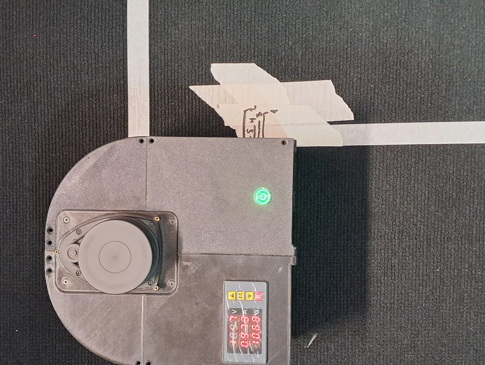
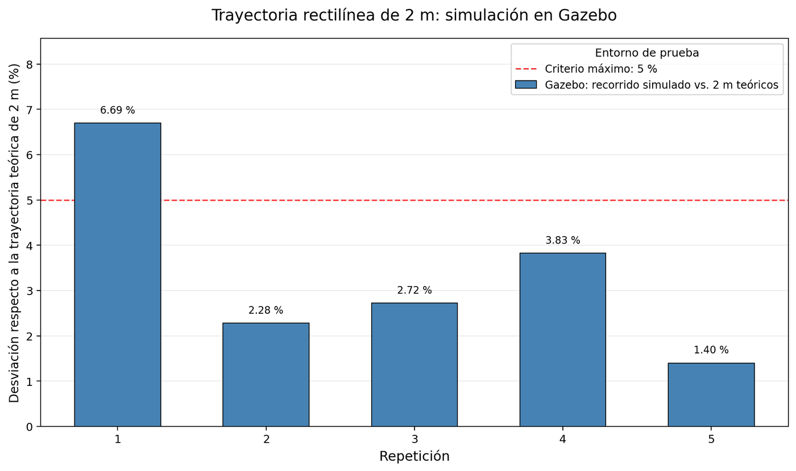
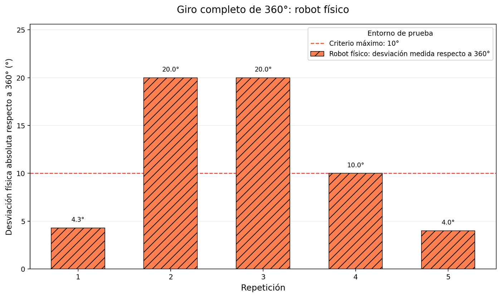

Un robot con dos ruedas y sin volante puede avanzar, doblar y girar sobre sí mismo. Saber cuánto avanzó es otro problema. Este tema explica la tracción diferencial, cómo se cuenta el giro de las ruedas y qué tan confiable resultó esa cuenta en el robot real.
NivelLectura
Error de odometría en cinco rectas de 2 m del robot real, medido con cinta métrica. Fig. 5.2 b de la tesis.
Contar pulsos para saber cuánto avanzó
La odometría cuenta los pulsos de los encoders y acumula error con cada metro: en el robot real se equivocó un 3,63 % en una recta de 2 m 1.
3,63 %error medio de la odometría frente a una cinta métrica
0,44 %dispersión entre repeticiones, la firma de un sesgo sistemático
1980pulsos del encoder por vuelta de rueda
5repeticiones por ensayo, en simulación y en el robot real
Ver el detalle: cómo se cuentan los pulsos
El robot dobla haciendo que una rueda gire más rápido que la otra. Para saber cuánto avanzó cuenta los pulsos de los encoders, una técnica llamada odometría, que es simple y rápida pero acumula error con cada metro. En el robot real esa cuenta se equivocó un 3,63 % en una recta de 2 m, con un error tan parejo que revela un sesgo que se puede corregir.
La tracción diferencial
Una rueda más rápida que la otra hace doblar al robot, con ruedas separadas 18,8 cm 1. El controlador limita a 0,13 m/s y 0,35 rad/s.
Prueba con dos velocidades de rueda
Interactivo
Mueve los deslizadores o elige un caso, y observa dónde queda el centro de giro. El dibujo usa el radio de rueda de 3,35 cm y la separación de 18,8 cm del robot real. Las velocidades son ejemplos.
Con la rueda izquierda a 0,100 m/s y la derecha a 0,130 m/s, el robot avanza a 0,115 m/s, gira a 0,16 rad/s y recorre un círculo de 0,72 m de radio, con el centro de giro a su izquierda. Necesita JavaScript para cambiar las velocidades.
Ver el detalle: las dos reglas, el centro de giro y el controlador
Un robot diferencial tiene dos ruedas motrices, cada una con su motor, y un apoyo pasivo como una rueda loca. No tiene volante. Dobla haciendo que una rueda gire más rápido que la otra, igual que un tanque o una silla de ruedas. Es la configuración más común en robots móviles pequeños por su simpleza mecánica y porque puede girar en su lugar, algo que un auto no puede hacer 2.
Dos reglas lo resumen todo. La velocidad del robot es el promedio de las velocidades de sus ruedas. Y la rapidez con que gira es la diferencia entre ambas ruedas dividida por la distancia que las separa, 18,8 cm en este robot 1. Con esas dos cifras aparece el centro de giro, el punto alrededor del cual el robot da la vuelta en ese instante. Su distancia al centro del robot es el radio de la curva, la velocidad dividida por el giro.
Por eso una diferencia pequeña entre ruedas produce una curva amplia, con el centro de giro lejos, y una diferencia grande, una curva cerrada. Con las dos ruedas iguales el centro se va al infinito y el robot avanza recto. Con velocidades opuestas queda justo en medio de las ruedas y el robot gira en su lugar. Cada rueda recorre su propio círculo alrededor de ese punto, y la de afuera debe ir más rápido porque su círculo es más largo.
El controlador diferencial de ROS 2 hace la cuenta al revés. Recibe una velocidad y un giro para el robot y calcula cuánto debe girar cada rueda. En el robot real limita la velocidad a 0,13 m/s y el giro a 0,35 rad/s, valores prudentes para un recinto pequeño.
Para el curioso: las fórmulas
Con radio de rueda r, separación entre ruedas b y velocidades angulares de rueda ωR y ωL:
v = (r / 2) · (ωR + ωL) ω = (r / b) · (ωR − ωL)
El radio de la curva, la distancia del centro del robot al centro de giro, sale de dividir las dos:
R = v / ω = (b / 2) · (ωR + ωL) / (ωR − ωL)
La relación inversa, la que usa el controlador diferencial para repartir una orden entre las ruedas:
ωR = v / r + (b / 2r) · ω ωL = v / r − (b / 2r) · ω
Para seguir la posición se suma cada pequeño avance en la dirección en que mira el robot, en intervalos cortos de tiempo T:
x nuevo = x + T · v · cos θ y nuevo = y + T · v · sin θ θ nuevo = θ + T · ω
Ecuaciones 3.3 a 3.8 de la tesis, según Corke 2 y Ferreira y otros 3.
Encoders: contar el giro de cada rueda
Dos canales en cuadratura dan el sentido, y contar todos los flancos multiplica por cuatro la resolución 1. El firmware usa 1980 pulsos por vuelta, y se midieron 1976 y 1969.
Canales A y B, y el sentido de giro
Interactivo
Cambia el sentido de giro y observa cómo se invierte el orden entre A y B. Avanza de a un paso para comparar las dos formas de contar.
Si A cambia antes que B, la rueda gira hacia adelante. Si B cambia antes, hacia atrás. Contar los cuatro flancos de cada ciclo da cuatro cuentas por cada una que se obtiene contando solo las subidas de A. Necesita JavaScript.
Ver el detalle: la resolución medida, las interrupciones y un video
Un encoder incremental convierte el giro de un eje en pulsos eléctricos. En los de efecto Hall, como los de estos motores, un imán con varios polos gira junto al eje del motor y dos sensores producen dos señales desfasadas un cuarto de ciclo, llamadas canales en cuadratura. El orden en que cambian dice el sentido de giro, y contar todos los cambios de ambos canales multiplica por cuatro la resolución 1.
Como el sensor está en el eje del motor y la rueda gira mucho más lento por la caja reductora, cada vuelta de rueda produce cientos de pulsos. En teoría, la resolución se calcula multiplicando los pulsos por vuelta del motor, el factor cuatro y la reducción. En la práctica conviene medirla, porque las tolerancias mecánicas cambian el número. Giré cada rueda una vuelta completa diez veces y obtuve promedios de 1976 pulsos en la derecha y 1969 en la izquierda. El firmware usa un único valor de 1980, que introduce un error sistemático de 0,20 % y 0,56 % respectivamente 1.
El conteo no ocurre en el ciclo principal del programa. Cada cambio en un canal dispara una interrupción del Arduino, cuya rutina suma o resta en el contador de esa rueda. Así el conteo avanza en paralelo a todo lo demás.
Una animación de cómo un encoder incremental entrega dirección y posición. Útil para ver en movimiento lo que el interactivo muestra en dos canales. Fuente 6
Odometría: saber dónde estás contando pasos
Cada error de la odometría se suma al siguiente 3. Los sistemáticos se corrigen calibrando, y los aleatorios solo se acotan con otro sensor 2.
Ver el detalle: los dos tipos de error y la analogía del auto
La odometría estima la posición del robot sumando el desplazamiento de sus ruedas 3. Es la misma idea de la navegación por estima que usaban los barcos antes de los satélites, o de caminar con los ojos cerrados contando pasos. Es barata y rápida, pero cada pequeño error se suma al siguiente y la posición estimada se va alejando de la real.
Hay dos tipos de error 2. Los sistemáticos se repiten siempre igual, como un radio de rueda mal calibrado. Los aleatorios cambian de una vez a otra, como el deslizamiento de una rueda sobre la alfombra. La diferencia importa, porque define el remedio. Los primeros se corrigen calibrando. Los segundos solo se acotan con otro sensor. El ensayo de la recta muestra los dos, y en Sesgo y dispersión se ve qué corrige una calibración.
El cuentakilómetros de un auto hace odometría, y por eso marca distinto si cambias el tamaño de los neumáticos.
El ensayo de la recta de 2 metros
Cinco rectas de 2 m medidas con cinta: error odométrico medio de 3,63 %, entre 2,88 y 4,01 %, y de seguimiento, 7,18 %. Su dispersión de 0,44 % indica un sesgo sistemático 1.
Tres distancias de una misma recta
Datos de la tesis
Promedio de cinco repeticiones en el robot real.
Ordenado 2,000 m. Encoders 1,924 m. Cinta 1,856 m.

El robot junto a las marcas de cinta de la prueba, visto desde arriba. Las marcas son la referencia de la prueba. Foto del repositorio ros2-indoor-exploration-robot, MIT.
Prueba
Odometría (m)
Cinta (m)
Error odométrico
1
1,920
1,846
4,01 %
2
1,922
1,868
2,88 %
3
1,923
1,851
3,87 %
4
1,926
1,856
3,78 %
5
1,928
1,861
3,61 %
Media
1,924
1,856
3,63 %
Tabla A6.2 de la tesis. Distancia ordenada, 2,00 m en todas las pruebas.
Ver el detalle: las dos cifras, las figuras y la simulación
Un script ordenó al robot avanzar a 0,13 m/s durante 15,4 s, el tiempo para recorrer 2 m a esa velocidad, y después lo detuvo. Se repitió cinco veces. En cada repetición registré lo que estimó la odometría y medí con cinta métrica lo que el robot avanzó de verdad 1.
De esas tres distancias salen dos cifras que miden cosas distintas, y confundirlas es el error más común al leer este resultado.
Error de seguimiento, 7,18 %
Compara la cinta con lo ordenado. Dice que el robot avanzó menos de lo pedido. Una parte ya la registran los encoders, que marcan 3,8 % menos que los 2 m, y es compatible con el tiempo que tardan las ruedas en acelerar, porque la orden se definió por tiempo y no por posición.
Error odométrico, 3,63 %
Compara los encoders con la cinta. Dice que el robot cree haber avanzado unos 7 cm más de lo real. Esta es la cifra que describe la calidad de la odometría.
Lo que revela la dispersión
El error odométrico varió solo 0,44 % entre repeticiones. Un error tan parejo es la firma de un sesgo sistemático, compatible con un radio efectivo de rueda distinto del configurado o con un deslizamiento persistente.
No separé esas causas con ensayos independientes, pero sí puedo descartar una. El valor de 1980 pulsos por vuelta es mayor que los promedios medidos, así que haría que la odometría subestimara la distancia, no que la sobreestimara 1. La causa tiene que estar en otra parte.
Robot real: odometría frente a la cinta métrica. Fig. 5.2 b de la tesis.

Simulación: odometría frente a los 2 m teóricos. No mide lo mismo que la figura de la izquierda. Fig. 5.2 a de la tesis.
Las dos figuras se parecen, pero no se comparan entre sí. En simulación la pose verdadera de Gazebo no quedó registrada y la distancia salió de la propia odometría, así que el 3,39 % simulado compara la odometría con lo ordenado, no con una medición externa 1. Es un buen ejemplo de por qué una tabla debe decir siempre contra qué se mide cada número.
Sesgo y dispersión: qué corrige una calibración
Sesgo es el error medio, 3,63 %, y dispersión es su desviación estándar, 0,44 %. Dividir por 1,0363 quita el sesgo, no la dispersión. Intervalo al 95 %: de 3,08 a 4,18 %.
Calibrar quita el sesgo, no la dispersión
Datos de la tesis
Cada fila es una prueba. El círculo vacío es su error medido y el lleno, el mismo error después de dividir por el factor. En Simular repeticiones puedes cambiar el sesgo y la variación, y probar el factor en repeticiones nuevas.
Al dividir la odometría por 1,0363, el error medio pasa de 3,63 % a 0 %, pero las cinco pruebas siguen separadas entre sí: quedan en 0,37, −0,72, 0,23, 0,14 y −0,02 %. Necesita JavaScript para la simulación.
Separa sesgo y dispersión
La recta real compara el odómetro con la cinta, no con la orden nominal.
El factor hipotético corrige el error medio de esas repeticiones, pero no elimina su dispersión.
Revisa nuevas repeticiones ilustrativas: una corrección sobre la muestra no demuestra calibración del robot.
Las acciones explican el modelo de esta guía. Los ejemplos ilustrativos no sustituyen registros del robot.
Ver el detalle: cómo se separan el sesgo y la dispersión
Para leer cinco repeticiones conviene separar dos cifras. El sesgo es el error medio, 3,63 %: cuánto se equivoca la odometría en promedio, y siempre hacia el mismo lado. La dispersión dice cuánto cambian las repeticiones entre sí. Aquí se mide con la desviación estándar, 0,44 %, que es como la distancia típica de cada prueba a la media. En la recta del ensayo, de 1,856 m, equivalen a unos 6,7 cm y 0,8 cm. Con esas cinco pruebas, el intervalo de confianza al 95 % del error medio va de 3,08 a 4,18 %: una dispersión tan baja deja el sesgo bien acotado aun con pocas repeticiones, como se explica en Cuánto dicen cinco repeticiones.
Un sesgo se corrige calibrando. Si la odometría marca en promedio 3,63 % de más, basta dividir lo que mide por 1,0363, lo que en la práctica se hace ajustando el radio de rueda o los flancos por vuelta que usa el software. La dispersión no se quita así, porque cambia de una vez a otra.
La tesis no aplicó esta corrección, y hay una razón para tomarla con cuidado. El factor sale de las mismas cinco pruebas con que se evalúa, así que en ellas siempre deja el error medio en cero. Para saber si sirve hay que medir repeticiones nuevas con el factor ya puesto, que es lo que muestra la simulación. Y como la causa del sesgo no se determinó, convendría comprobarlo también en recorridos distintos de una recta.
Reto: ¿qué corrige la calibración?
Reto
Dos preguntas con los números de la sección. Elige una respuesta y verás al instante si acertaste y por qué.
1. Al dividir por 1,0363, el error medio de 3,63 %, ¿pasa a 0 %, se queda en 3,63 % o baja hasta 0,44 %? 2. Después de calibrar, ¿las cinco rectas dan el mismo error? Necesita JavaScript para responder con respuesta inmediata.
Ver las respuestas
1. Pasa a 0 %: el factor sale de ese mismo error medio. 2. No: siguen separadas, de −0,72 a 0,37 %. Calibrar quita el sesgo, no la dispersión.
El ensayo de giro y lo que enseña su diseño
Se pidió 0,4 rad/s durante 15,7 s, pero con el límite de 0,35 rad/s el robot llegaría a 315°, no a 360° 1. Los giros reales midieron entre 340° y 380°, con una desviación de 3,24 % respecto de 360°.
Cinco giros medidos frente a 315° y 360°
Datos de la tesis
Giros medidos de 355,7°, 340°, 380°, 370° y 356°.
Ver el detalle: el límite del controlador y la lección del diseño
Para el giro, un script pidió 0,4 rad/s durante el tiempo que tomaría una vuelta completa a esa velocidad, unos 15,7 s. El detalle es que el controlador diferencial limita el giro a 0,35 rad/s. Con ese límite aplicado de forma ideal, el robot llegaría a 315°, no a 360° 1.
Todos los giros superaron los 315°, tanto en simulación, entre 335,9° y 347,4°, como en el robot real, entre 340° y 380°. Eso indica que la velocidad efectiva no quedó limitada de forma ideal, y la causa no se determinó. Por eso informo una desviación respecto de 360° nominales, de 3,24 % en el robot real y 4,74 % en simulación, y no un error de odometría angular 1. Con cinco repeticiones, además, la desviación media en el robot real, de 11,7°, tiene un intervalo al 95 % de 1,8 a 21,6°, demasiado amplio para sacar conclusiones finas. Los registros de cada prueba guardan la odometría, y su velocidad angular permitiría revisar la velocidad aplicada sin repetir el ensayo.

Robot real: desviación física medida, con sobregiros y subgiros. Fig. 5.2 d de la tesis.Simulación: giro acumulado de la odometría frente a 360°. Fig. 5.2 c de la tesis.
La lección vale para cualquier ensayo. Tiene que medir lo que uno cree que mide. Si la orden choca con un límite del sistema, el resultado mezcla el error que se quería estudiar con el efecto del límite. La mejora propuesta es un giro controlado hasta un ángulo fijo, que entregaría un error angular directo. Mientras tanto, los registros de cada prueba conservan la odometría y permiten revisar la velocidad aplicada sin repetir el ensayo.
La corrida en que la odometría avanzó y el robot no
Se excluyó una de seis ejecuciones: en 5,09 minutos envió 14 metas y la odometría sumó 3,851 m, pero el robot no se movió 1.
Las señales de esa corrida
Datos de la tesis
Encoders 3,851 m. Mapa sin crecimiento. Posición real sin cambio.
La iteración 2 de la exploración. La odometría sumó 3,851 m, pero el robot no se movió de su posición inicial. Video del autor, en bucle.Ver el detalle: qué muestran las señales y su lección
De las seis ejecuciones de exploración, una se excluyó. Durante 5,09 minutos el explorador envió 14 metas y la odometría sumó 3,851 m, pero el robot no se movió de su posición inicial. La causa no se determinó 1.
El episodio muestra el límite de fondo de los encoders. Miden el giro de las ruedas, no el avance del robot, así que unas ruedas que giran sin avanzar suman distancia igual. El láser sí tenía la señal, porque si el robot no se mueve el mapa no crece. Por la misma razón, en las otras cinco corridas el movimiento queda respaldado por una evidencia independiente de los encoders, que es el crecimiento del mapa. Una cinta métrica tampoco es la verdad absoluta, pero es una referencia externa, y eso es lo que importa para medir un sesgo de unos 7 cm.
Cómo se mejora una odometría
Un sesgo tan parejo se puede calibrar. UMBmark recorre un cuadrado de 4 m, cinco veces en cada sentido, y separa los errores de ruedas y separación 4.
El cuadrado en los dos sentidos
Ilustrativo
Cambia cuánto avanza una rueda frente a la otra y la separación efectiva, o elige un caso. A la izquierda está el recorrido completo y a la derecha, la llegada ampliada.
Si la rueda derecha avanza 0,59 % más que la izquierda con el mismo conteo y la separación efectiva es 2 % mayor que la configurada, en un cuadrado de 1 m el recorrido antihorario vuelve casi exacto al inicio y el horario termina a unos 18 cm. Necesita JavaScript.
Ver el detalle: UMBmark, sus pasos y las otras mejoras
Un sesgo tan parejo como el de este robot es una buena noticia, porque se puede calibrar. La recta sirve para el error de escala, el que afecta igual a las dos ruedas. Hay otros dos errores sistemáticos que una recta casi no muestra, y según Borenstein y Feng son los dominantes en robots diferenciales 4. Uno es que una rueda avance un poco más que la otra con el mismo conteo, por ejemplo por diámetros distintos, y curva cada tramo que la odometría cree recto. El otro es que la separación efectiva entre ruedas no sea la configurada, y hace que cada giro quede corto o largo.
Para separarlos propusieron UMBmark. El robot recorre un cuadrado de 4 m guiándose solo por su odometría, cinco veces en sentido horario y cinco en antihorario, y se mide dónde termina respecto de donde partió. Recorrerlo en los dos sentidos es lo importante. En uno, los dos errores pueden compensarse y dar un resultado engañosamente bueno, y en el otro se suman. Con los dos resultados se calcula una corrección para cada causa 4.
Corregir la escala. Con una recta medida, como la de este trabajo.
Recorrer el cuadrado. Cinco veces en cada sentido, solo con la odometría.
Medir la llegada. Dónde termina el robot respecto del punto de partida.
Separar las causas. Comparar los dos sentidos y corregir ruedas y separación.
Este robot tiene un dato relacionado con el primer error. Sus ruedas no dieron el mismo número de flancos por vuelta, 1976 la derecha y 1969 la izquierda, y el firmware usa 1980 para ambas. Si los radios fueran iguales, con el mismo conteo la rueda derecha avanzaría 0,35 % menos que la izquierda, y en la recta de 2 m el robot se desviaría unos 4 cm hacia la derecha. Es una estimación, porque el ensayo no midió la desviación lateral. UMBmark no se aplicó en este trabajo, y es una mejora barata para quien construya un robot parecido.
Las otras dos mejoras agregan información. Una unidad inercial mide el giro sin depender de las ruedas y se puede fusionar con la odometría mediante el paquete robot_localization, lo que propongo como trabajo futuro. Y el láser, a través de SLAM, ya corrige la deriva mientras se construye el mapa, como se explica en Ver y mapear.
En el mundo real
El vehículo lunar Apollo, en 1971 y 1972, sumaba un giroscopio a la odometría de sus ruedas 5.
Ver el detalle: el caso del vehículo lunar
La navegación por estima es más antigua que los robots y sigue presente en máquinas de todos los tamaños.
La Luna · 1971 y 1972
El vehículo lunar del programa Apollo
Su sistema de navegación registraba de forma continua la dirección con un giroscopio y la distancia con odómetros en las ruedas, y un computador calculaba el rumbo y la distancia de regreso al módulo lunar.
Sumaba un sensor de giro a la odometría de ruedas, la misma mejora que propongo con una unidad inercial. Ver el caso completo.
Los números del texto llevan a esta lista. Qué es cada referencia de la tesis y para qué la usa el trabajo se explica en la bibliografía de la tesis.
TesisValderas Neculqueo, S. (2026). Navegación y exploración autónoma de interiores utilizando un robot móvil de tracción diferencial. UTEM. Secciones 3.3.2, 3.4, 4.3.3, 5.1 y 5.6, Tablas 4.3, 5.1 y 5.2, y Anexos 4.1, 6, 7 y 8.6 con la Tabla A8.4.
LibroCorke, P. (2023). Robotics, Vision and Control: Fundamental Algorithms in Python (3.ª ed.). Springer. Secciones 4.1 y 6.1. doi.org/10.1007/978-3-031-06469-2
ArtículoFerreira, M., Moreira, L. y Lopes, A. (2023). Differential Drive Kinematics and Odometry for a Mobile Robot Using TwinCAT. Electronic Research Archive, 31(4). doi.org/10.3934/era.2023092
ArtículoBorenstein, J. y Feng, L. (1996). Measurement and correction of systematic odometry errors in mobile robots. IEEE Transactions on Robotics and Automation, 12(6). doi.org/10.1109/70.544770
NASANASA Space Science Data Coordinated Archive. The Apollo Lunar Roving Vehicle. nssdc.gsfc.nasa.gov